Heróis Notáveis
-
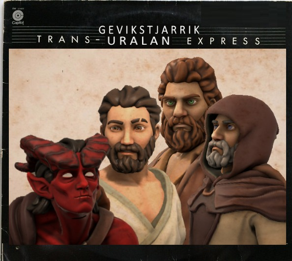
Salmonella, Telaski Oavara, Sharon & Kenobi
-
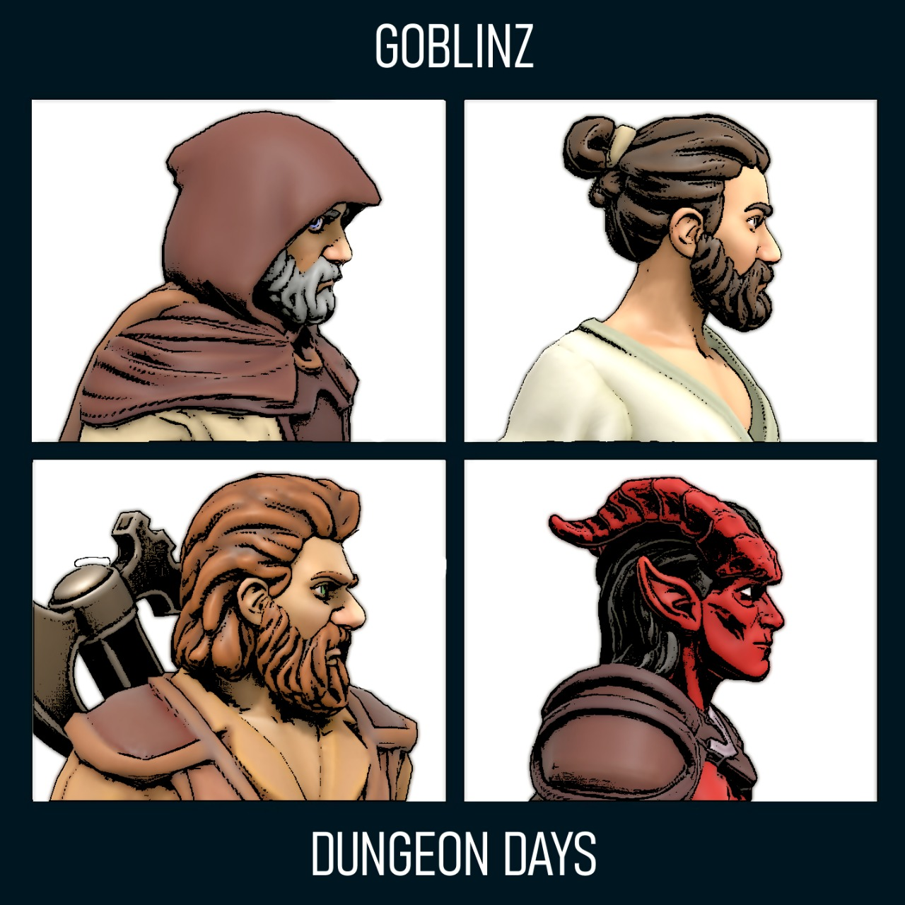
Eles de novo
-

Falter, Ninjei, Joerg Quebralâmina, Deógenes, Dr. Pinto, D'Lies, Gupta & Kurt Kobain
-

Eles de novo
-
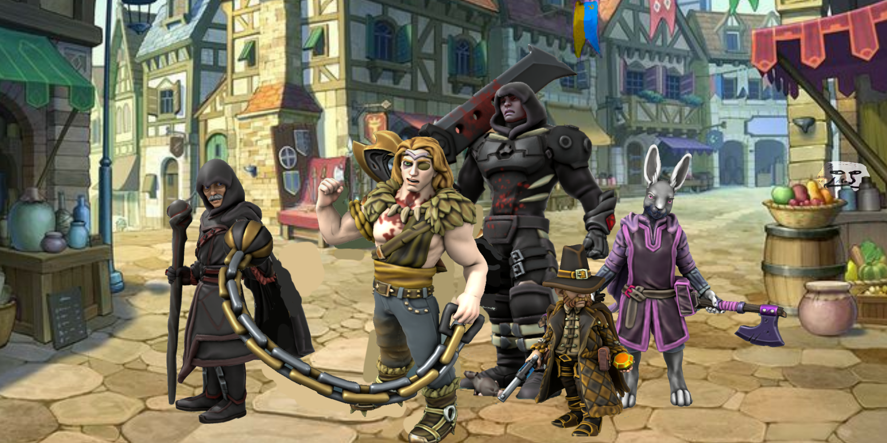
Vétus, Vladiniki, Tenebrius, Polo & Voravoh
-

Johan Couroduro, Yerai, Anvom Von Enkim, Natus Ad Bellum, Sharauto, Morion, Ugrog Tragash, Alecsandr Vopos
(personagens de one-shots diversas) -
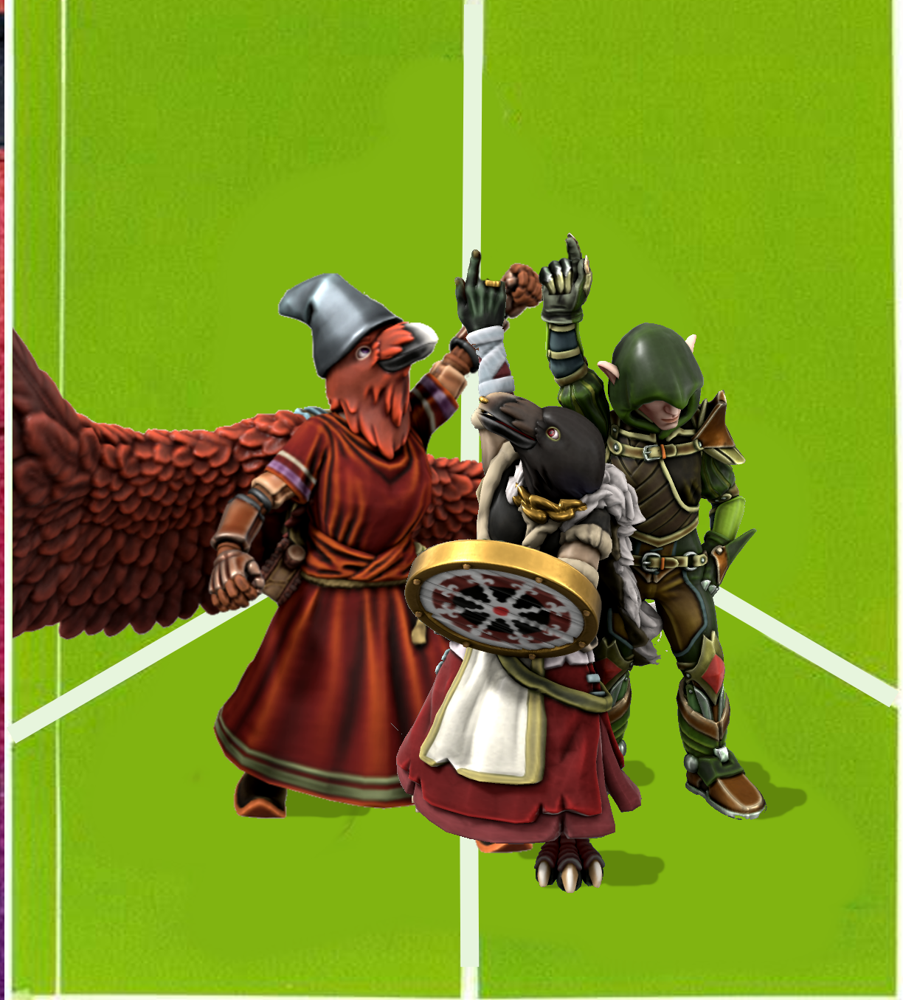
Kiko, Estalo & Angrod
-
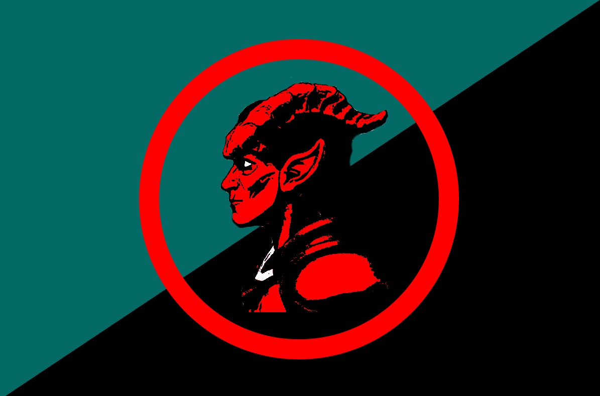
Salmonella, sua habilidade para roubo e ardilagem são coisas de lenda. Durante sua vida criou vários inimigos, mas também ajudou e inspirou diversas pessoas, principalmente no orfanato em Ohmar em que foi criado
—"Como assim, ""suas"" moedas?" -
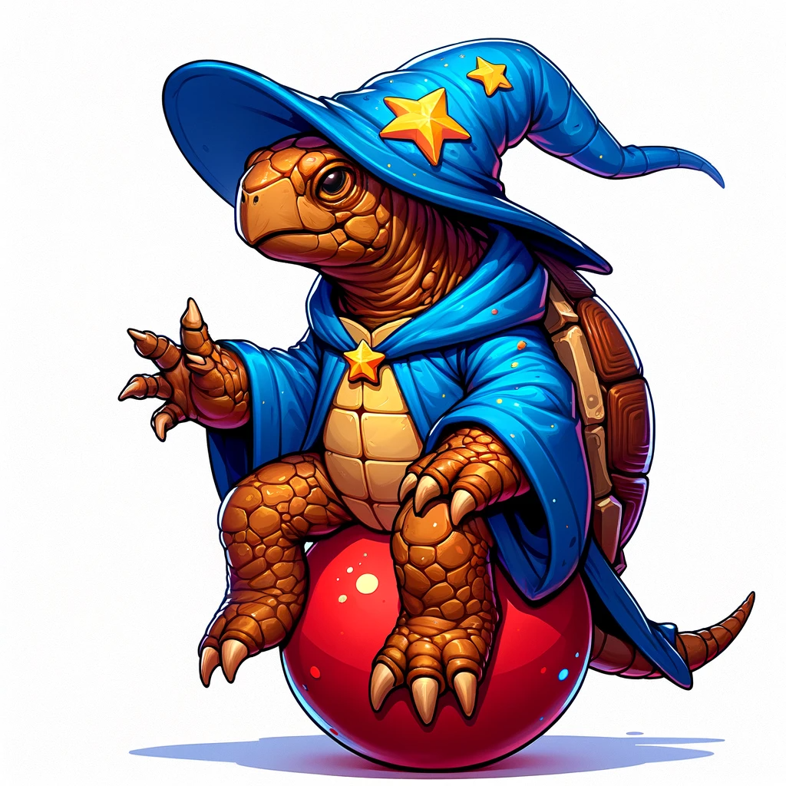
Mulo, grande contador de histórias
Líderes Notáveis
-
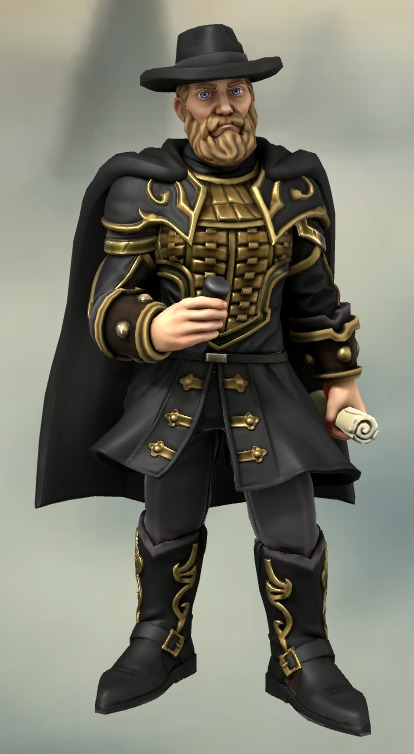
Rei Pepe, já falecido, seu espírito ainda habita a Biblioteca Real, seu local preferido desde sua infância
-
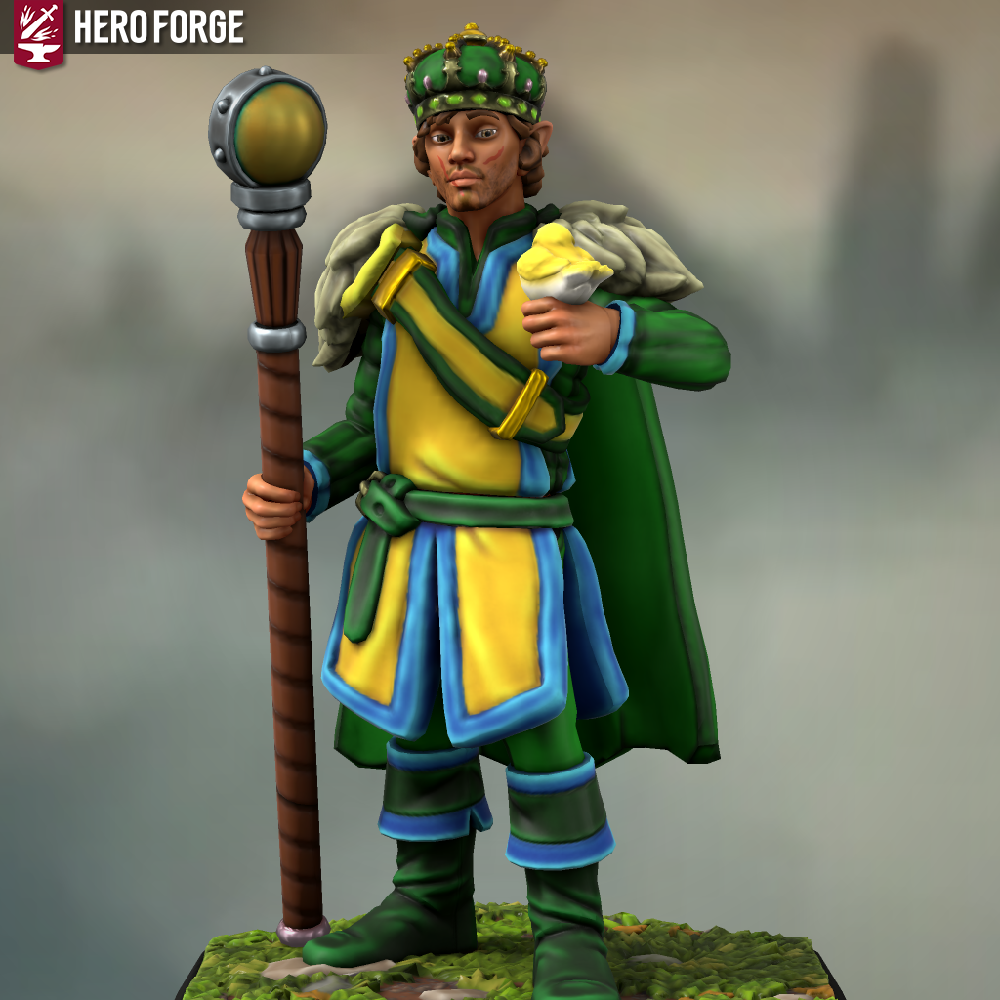
João Canário, uma vez um patrulheiro das áreas selvagens de Uralan, atualmente é o rei de Uralan, escolhido após se destacar por sua bravura e inteligência nos conflitos ao norte próximos da morte de Pepe. É dito que o real motivo da escolha de Pepe foi o coração e humildade exposta por ele, algo que não encontrou em seus filhos. Atualmente criou vários inimigos dentro e fora da corte, mas o público em geral tem tido uma boa opinião sobre suas decisões e seu reinado turbulento até o momento
-
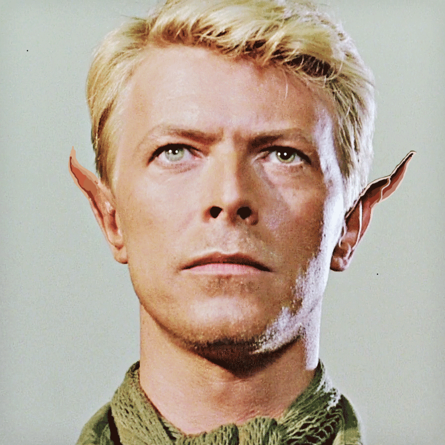
David, Imperador de Valryn, foi criado como um servo e mensageiro do Rei Pepe em Uralan, se mudou para Valryn ao saber que seu pai, na época imperador, estava guerreando em uma campanha contra Aulora. Grande parte da população estava insatisfeita com estes ataques, além de realizar pouco progresso no frio do norte, então David viu uma oportunidade de ir contra o próprio pai e usurpar o poder dele, se alinhando com Rigotin, reconhecendo Aulora como independente e trazendo um período de paz a Valryn.
-
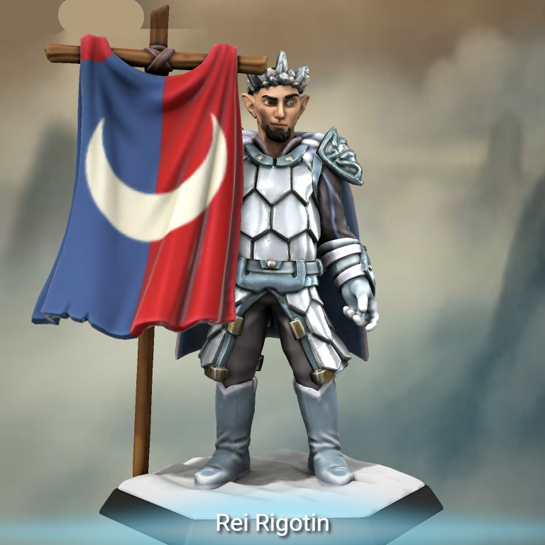
Rei Rigotin de Aulora, grande estrategista militar e realizou acordos com David para encerrar os conflitos na fronteira com Valryn.
Vilões Notáveis
-
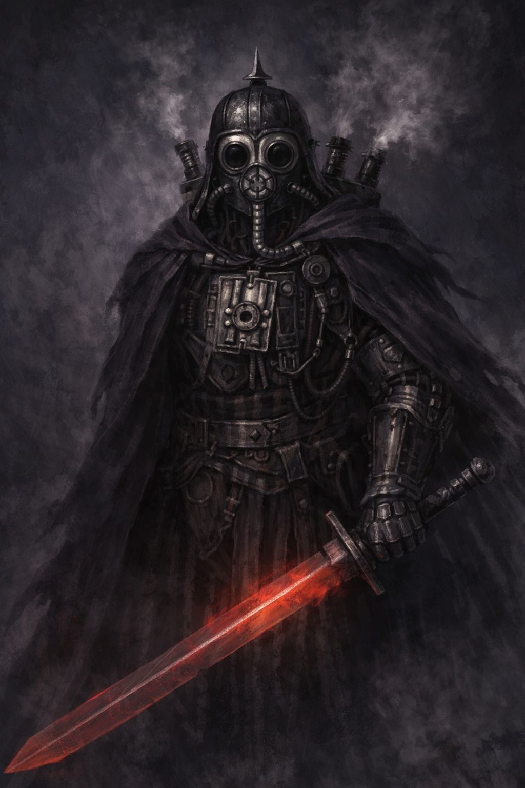
Vaper, um antigo estudante dos cavaleiros Dejai, liderou um gigantesco exército em Korodai em ataque contra Uralan em 1208 AQ, quase conseguindo seus planos de dominação e obtenção de uma relíquia guardada em Salvaterra, para renascer como um deus.
-
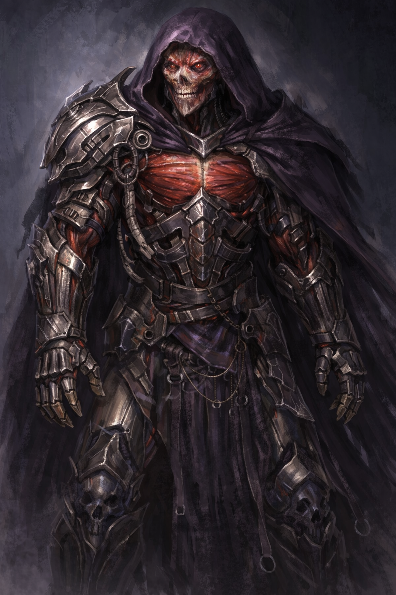
Pouco é conhecido sobre Qarazz, mas histórias e contos dizem que foi um proeminente artífice de Mechestur, que teve seu corpo destruído em um gigantesco ataque arcano durante as Guerras Psíquicas. Seu corpo foi reformado e distorcido pela magia estranha, assim como sua mente. É dito que ele já apareceu em diversos locais em Epeon, e controla uma grande área devastada pela magia em Mechestur, planejando seus próximos passos.
-
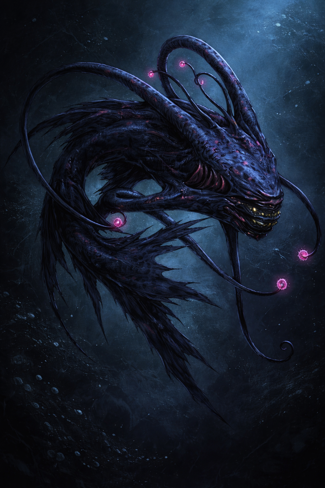
Hasof, um dos mais poderosos e antigos Aboletes conhecidos, com sua mente persistindo desde antes dos deuses governarem sobre Epeon. Sua influência foi sentida principalmente em Aulora em 1247 AQ, onde seus planos de destruição e inundação mundial para reconquistar a terra firme foram impedidos por heróis e um dragão de prata.
-
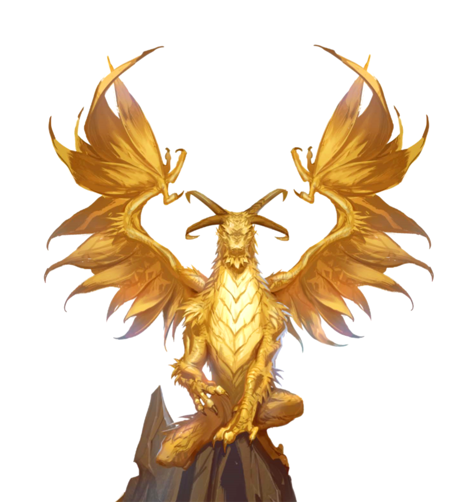
Havok é um gigantesco dragão de ouro, um dos mais antigos e anciões de todos. Estava em um sono profundo nas montanhas de Uk-rain por séculos, até acordar por sentir uma invasão demoníaca se aproximando. Mesmo sendo uma criatura boa, seus métodos envolviam destruir qualquer um que não iria ajudá-lo, e aqueles que ele via como fracos demais, e por isso entrou em conflito com um grupo de aventureiros e foi derrotado em 1255 AQ.